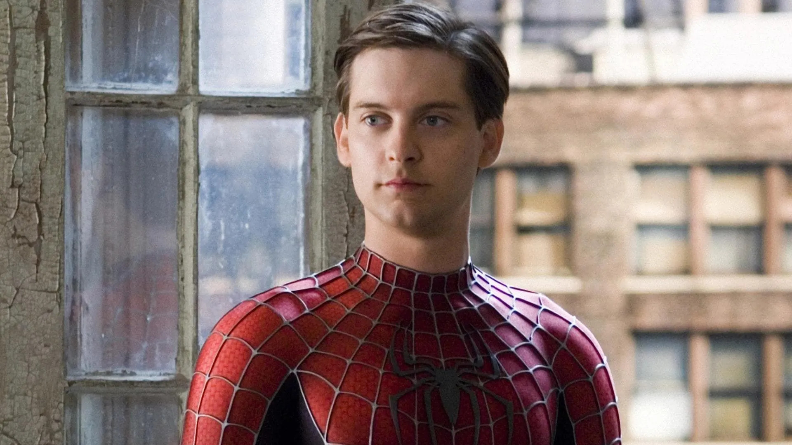

Spider-man de Tobey Maguire
¿Quien es?
Interpretó a Spider-Man en la trilogía dirigida por Sam Raimi. Su versión se caracteriza por mostrar un Peter Parker más reservado y centrado en el sacrificio personal. Fue una de las representaciones más reconocidas del personaje en el cine.
Primera aparicion
Interpretó por primera vez a Spider-Man en Spider-Man del 2002.
Descripcion
Su versión mostró un Peter Parker más tímido y emocional, centrado en la responsabilidad y el sacrificio. Fue la primera gran adaptación cinematográfica moderna del personaje.
Dato interesante
Fue el primer Spider-Man live-action que popularizó las telarañas orgánicas, ya que no usaba lanzadores mecánicos.